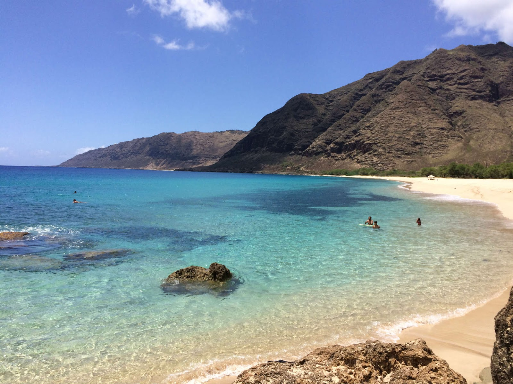

A minha viagem perfeita seria em uma praia com bastante tranquilidade, com um mar de águas cristalinas, de preferência em um local isolado e longe de toda agitação. Tentaria visitar piscinas naturais e ter contato direto com diferentes tipos de peixes, observar mais a fauna marinha e descobrir novas espécies (longe de perigo, claro). Confesso que não sou muito de mudar meu paladar e me abrir à novas comidas, mas tentaria experimentar comidas locais.
